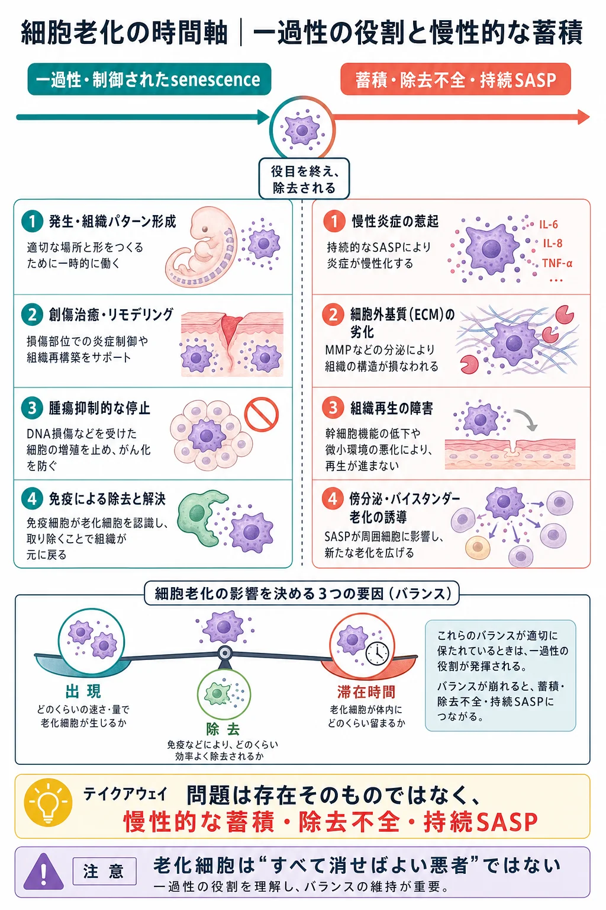
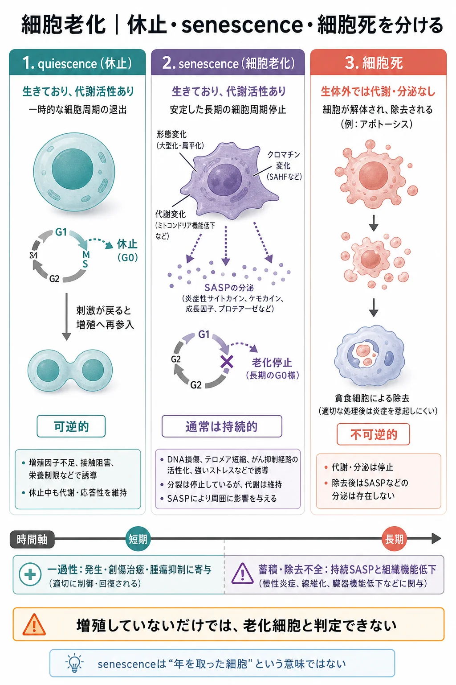
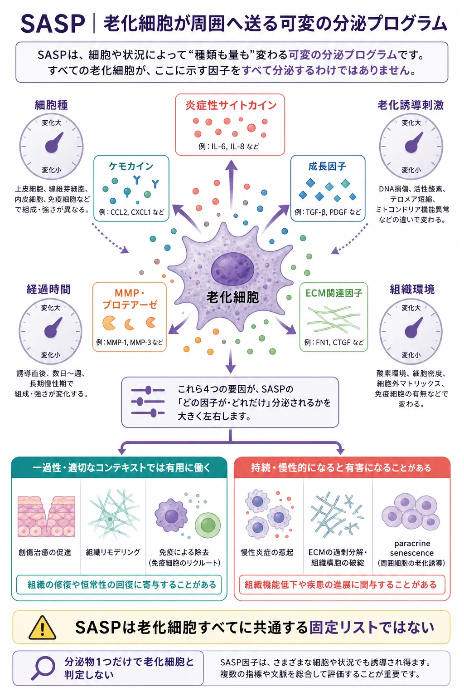
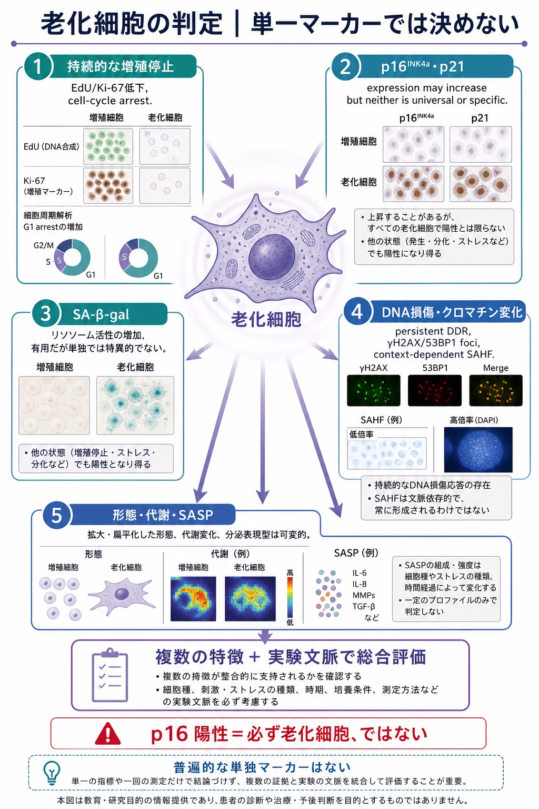
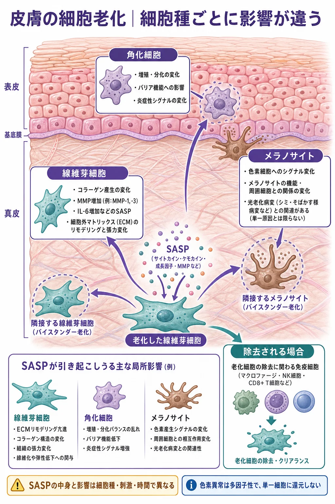
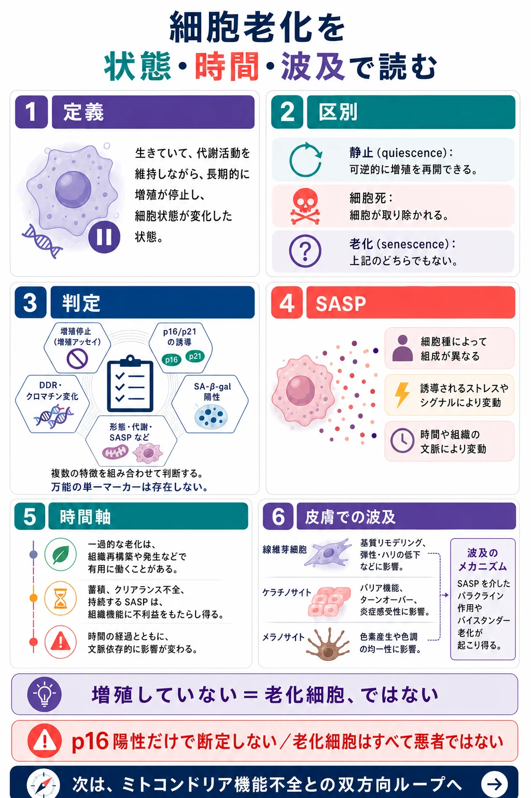

基礎 ／ 細胞は加齢で何が変わるか
細胞老化cellular senescence
公開 2026-09-14
加齢や紫外線による損傷で、皮膚には増殖を止めた老化細胞が蓄積します。老化細胞は生き続け、SASP（老化に伴う分泌の変化） を通じて、周囲の炎症やECMの代謝に影響します。この章では、その働きと皮膚への影響を学びます。
この章の一言
老化細胞は、増殖を止めた後も周囲に影響します。 一時的には修復を助けますが、蓄積すると炎症の持続や組織機能の低下に関わります。

1 細胞老化は、傷ついた細胞の増殖を止める
細胞老化（cellular senescence） は、増殖停止が持続し、代謝やクロマチン、分泌なども変化する状態です。細胞は生きており、代謝を続けています。休止中の細胞と異なり、通常の増殖刺激では細胞周期へ戻りにくくなっています。
加齢した皮膚の細胞が、すべて老化細胞になるわけではありません。 増殖できる細胞にも、代謝やコラーゲン合成、周囲の刺激への反応の変化が起こります。「皮膚の加齢」は組織全体に起こる変化で、「細胞老化」はその一部を担う細胞の状態です。

修復しきれないDNA損傷や異常な増殖信号に応じて分裂を止めることは、がん化を防ぐための防御です。 この停止が持続し、代謝や分泌も変化した状態が細胞老化です。細胞老化は若い個体にも生じ、胚発生や創傷治癒、組織の再構築にも関わります。
マウスの創傷では、一時的に現れた老化細胞が PDGF-AA という成長因子を分泌し、筋線維芽細胞の形成と創の閉鎖を助けました。Demariaら, 2014
一方、老化細胞が蓄積すると、増殖による細胞の補充が制限され、炎症性の分泌が周囲の組織にも影響します。細胞が生じる速さと、免疫系が除去する速さの両方が、蓄積を左右します。
2 増殖を止めても、分泌は続く
細胞老化の引き金には、テロメア短縮、修復しきれないDNA損傷、酸化ストレス、がん遺伝子の活性化などがあります。皮膚では紫外線の反復曝露が重要です。
増殖停止とともに、細胞の大型化、クロマチンや代謝の変化、分泌の変化が起こります。現れる特徴やその強さは、細胞種と刺激によって異なります。
SASP：炎症やECMの代謝を変える分泌物
老化に伴う分泌の変化を SASP（senescence-associated secretory phenotype：老化関連分泌形質） と呼びます。
論文で出てくるSASP因子と、その働き
| 因子 | 種類 | 主な働き・論文で見ている変化 |
|---|---|---|
| IL-6 | 炎症性サイトカイン | 炎症反応を調節する。炎症性SASPの指標としてよく測定される |
| IL-1α・IL-1β | 炎症性サイトカイン | IL-6・IL-8などの産生を促し、炎症性SASPを強める。IL-1αは細胞表面で働く場合もある |
| IL-8（CXCL8） | ケモカイン | 好中球を呼び寄せる。IL-6とともに、炎症性SASPの指標としてよく測定される |
| CCL2（MCP-1） | ケモカイン | 単球などを呼び寄せる。免疫細胞の動員に関わる分泌の変化を見る |
| TGF-β | サイトカイン・成長因子 | ECM形成や組織の再構築に関わり、周囲の細胞の増殖停止を促す場合もある |
| MMP | ECM分解酵素 | コラーゲンなどの分解に関わる。サイトカインではないが、SASPの一部として調べられる |
ケモカインは、細胞の移動を誘導するサイトカインの一群です。IL-8とCXCL8、CCL2とMCP-1は、それぞれ同じ分子の別名です。Coppéら, 2008、Acostaら, 2013
これらは、老化細胞だけが出す物質ではありません。 免疫細胞や、炎症に反応した他の細胞からも出ます。IL-6やIL-8の増加は炎症性の分泌が増えたことを示しますが、老化細胞が増えたかは、増殖停止やp16・p21などと合わせて判断します。
SASPの中身と量は、細胞種・刺激・経過時間で変わります。炎症性のSASPが弱い老化細胞もあります。また、IL-6などが低下しても、分泌が抑えられただけの場合があるため、老化細胞が除去されたかは別に確認します。

3 論文のマーカーは、細胞のどの変化を見ているのか
老化細胞を調べる論文では、増殖停止、リソソームの変化、DNA損傷、分泌を、それぞれ別の指標で確認します。マーカーの名前を、細胞で起きている変化と結びつけると、図やグラフを読みやすくなります。

| マーカー | 何を見ているか | 老化細胞ではどう変わるか |
|---|---|---|
| p16（p16^INK4a） | CDK4/6を抑えて増殖を止めるタンパク質 | 増えるとRBによる増殖の抑制が続く。持続的な停止の手がかりになる |
| p21（p21^CIP1/WAF1） | p53などによって産生が増え、CDKを抑えるタンパク質 | DNA損傷などに応答して増える。一時的な停止にも、老化に伴う停止にも関わる |
| SA-β-gal | リソソームのβ-galactosidaseという酵素の活性 | リソソームや酵素の増加を反映して陽性になりやすい。一般的な染色では青く見える |
| Ki-67 | 細胞周期に入っている細胞で発現するタンパク質 | 増殖停止に伴い低下する。休止・分化した細胞でも低い |
| EdU・BrdUの取り込み | DNA合成時に取り込まれる標識を使い、S期の細胞を捉える | 増殖停止に伴い、取り込む細胞が減る |
| γH2AX・53BP1のfoci | DNA損傷に応答してできる、核内の集積した点状のシグナル | 損傷応答が持続すると、点状シグナルが残る。γH2AXはリン酸化されたヒストン、53BP1は損傷部位に集まるタンパク質 |
| IL-6・IL-8・MMPなど | SASPに含まれる分泌因子 | 炎症やECM分解に関わる分泌の変化を捉える。増える因子は細胞種と刺激で異なる |
老化細胞は、一つの目印だけでは判断できません。 増殖停止・リソソーム・DNA損傷・分泌の変化を合わせて確認します。
4 損傷の信号が、SASPの産生を促す
SASPの多くは、細胞が遺伝子を読み、タンパク質を合成して分泌したものです。その産生を促す経路の一つが、細胞質のDNAを検知する仕組みです。
DNAは通常、核やミトコンドリアの中にあります。老化細胞では、そのDNAの一部が外へ漏れ出すことがあります。細胞はこれを異常として感知し、炎症性サイトカインの産生を増やします。DNAの漏出が、SASPを促すきっかけになるのです。
サイトカインを作るには、まずその遺伝子を読み取り、mRNAを作る必要があります。この読み取りを調節するタンパク質が 転写因子 です。NF-κB・C/EBPβ は、IL-6やIL-8などの産生に関わる遺伝子の働きを高め、炎症性SASPを促します。
論文の「NF-κBの活性化」は、炎症に関わる遺伝子を働かせる仕組みが動いた、という意味です。NF-κB・C/EBPβは老化以外の炎症反応でも働きます。
mTORC1 は、mRNAをもとにSASP関連のタンパク質を作る段階（翻訳）を促します（→ mTORC1――タンパク質合成を調節する仕組み）。
5 免疫による除去が追いつかないと、蓄積する
免疫系は老化細胞の除去に関わります。SASPに含まれるケモカインも、免疫細胞を局所へ呼び寄せます。
- NK細胞は、老化細胞の表面に増えるストレスの目印を認識して攻撃します。NKG2D受容体と、そのリガンドであるMICA/MICBなどが関わります。
- マクロファージは、貪食や他の免疫細胞との連携を通じて除去に関わります。
- T細胞も、老化細胞の認識と除去を担う場合があります。
加齢に伴って免疫の働きが変化すると、除去が追いつかなくなります。老化細胞自身が攻撃を避ける仕組みもあります。ヒト細胞の研究では、老化細胞が表面に HLA-E を増やし、NK細胞やCD8⁺T細胞の攻撃を抑えることが示されました。Pereiraら, 2019
老化細胞の蓄積には、新たな細胞老化の発生と、除去の遅れの両方が関わります。
老化細胞を減らす、SASPを抑える
蓄積した老化細胞が周囲へ与える影響を減らすために、二つの方向から介入が研究されています。
| 介入 | 何を目指すか |
|---|---|
| セノリティクス（senolytics） | 老化細胞を選択的に死に導き、数を減らす |
| セノモルフィクス（senomorphics） | 老化細胞を生かしたまま、SASPなどの性質を変え、周囲への悪影響を抑える |
具体的な薬剤と、ヒトでどこまで効果が確かめられているかはsenolytic・mitophagy関連介入で扱います。
6 皮膚では、ECMと周囲の細胞に影響する
皮膚では、線維芽細胞・角化細胞・メラノサイトに細胞老化が生じます。細胞ごとに担う働きが違うため、影響も異なります。
- 線維芽細胞では、コラーゲン合成の低下や、MMP・炎症性サイトカインの分泌増加がみられます。ECMの合成と分解のバランスに影響します（→ 線維芽細胞とコラーゲン）。
- 角化細胞では、増殖停止や分泌の変化が、表皮の更新や周囲の細胞に影響します。
- メラノサイトでは、色素の輸送機能が変化します。また、老化したヒトメラノサイトの分泌物が、周囲の細胞のテロメア損傷と増殖低下を促すことも示されています。Victorelliら, 2019
SASPを介して近隣の細胞にも老化が誘導される現象を paracrine senescence（傍分泌による細胞老化） と呼びます。このような波及が、局所の炎症や組織機能の低下を長引かせます。
真皮の維持には、線維芽細胞がコラーゲンを作る力に加え、周囲の炎症とECMの分解も関わります。

この章の到達点
- 細胞老化は、増殖停止が持続し、代謝や分泌なども変わった状態。
- 腫瘍抑制や一時的な修復に役立つ一方、蓄積すると組織機能を損なう。
- SASP は炎症やECM代謝、周囲の細胞に影響する。中身と強さは細胞種・刺激・時間で変わる。
- p16・p21は増殖の抑制、Ki-67・EdUは増殖状態、SA-β-galはリソソーム、γH2AX・53BP1はDNA損傷応答を見る。複数の特徴を合わせて判定する。
- 老化細胞の蓄積には、発生の増加と免疫による除去の遅れが関わる。
- 皮膚では、老化した細胞自身の機能低下と、周囲への分泌作用を合わせて考える。
この章のまとめ

参考文献
- Kuilman T, et al. Oncogene-induced senescence relayed by an interleukin-dependent inflammatory network. Cell. 2008. PMID: 18555778.
- Chien Y, et al. Control of the senescence-associated secretory phenotype by NF-κB promotes senescence and enhances chemosensitivity. Genes & Development. 2011. PMID: 21979375.
- Zhu Y, et al. The Achilles’ heel of senescent cells: from transcriptome to senolytic drugs. Aging Cell. 2015. PMID: 25754370.
- Laberge RM, et al. MTOR regulates the pro-tumorigenic senescence-associated secretory phenotype by promoting IL1A translation. Nature Cell Biology. 2015. PMID: 26147250.
- Coppé JP, et al. Senescence-associated secretory phenotypes reveal cell-nonautonomous functions of oncogenic RAS and the p53 tumor suppressor. PLoS Biology. 2008. PMID: 19053174.
- Acosta JC, et al. A complex secretory program orchestrated by the inflammasome controls paracrine senescence. Nature Cell Biology. 2013. PMID: 23770676.
- Lee BY, et al. Senescence-associated beta-galactosidase is lysosomal beta-galactosidase. Aging Cell. 2006. PMID: 16626397.
- Demaria M, et al. An essential role for senescent cells in optimal wound healing through secretion of PDGF-AA. Developmental Cell. 2014. PMID: 25499914.
- Dou Z, et al. Cytoplasmic chromatin triggers inflammation in senescence and cancer. Nature. 2017. PMID: 28976970.
- Pereira BI, et al. Senescent cells evade immune clearance via HLA-E-mediated NK and CD8⁺ T cell inhibition. Nature Communications. 2019. PMID: 31160572.
- Victorelli S, et al. Senescent human melanocytes drive skin ageing via paracrine telomere dysfunction. The EMBO Journal. 2019. PMID: 31633821.
- Victorelli S, et al. Apoptotic stress causes mtDNA release during senescence and drives the SASP. Nature. 2023. DOI: 10.1038/s41586-023-06621-4.
- Park YJ, et al. Senescent melanocytes driven by glycolytic changes are characterized by melanosome transport dysfunction. Theranostics. 2023. PMID: 37554281.
- Ogrodnik M, et al. Guidelines for minimal information on cellular senescence experimentation in vivo. Cell. 2024. 判定に関する合意指針。PMID: 39121846.
ミトコンドリアの変化と細胞老化がどう関係するかは、ミトコンドリア機能不全と細胞老化で扱います。
この章の更新
- 初公開
- 皮膚の加齢と細胞老化の違いを明確化し、分子機序・マーカー・図表を整理